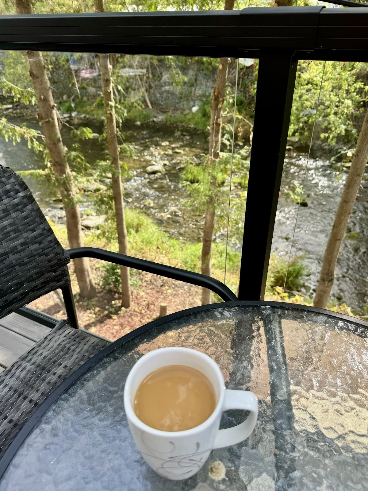

Western sandwich on sourdough
With home fries, “a generous portion, in fact we brought half of the sandwich home with us.”
Source: Ray Card, Google

Out back
“The real gem though is the patio seating out back looking down on the river.”
Robin Owen, Google review (4 ★)
“The water running over the weir swallowed any extraneous noise and gave an ambiance of tranquility… best outdoor seating I have found anywhere around Stirling/Tweed/Madoc.”
Photos
Photos from the café’s Google listing, mostly posted by customers. Tap to enlarge.
Reviews
4.2 ★ from 64 Google reviews (checked Oct 31, 2026). Quotes are word for word; “…” marks a trim. Named reviews were read on Google directly. “Via exa.ai copy” means a public copy of the Google listing that doesn’t show reviewer names.
★★★★★
“We stopped at Firehall Cafe in Stirling today for breakfast and it was very nice. Clean, well lit and pleasant cafe with fresh brewed coffee and a great selection for breakfast. We had a western sandwich on sourdough bread with home fries and 2 eggs with bacon and home fries with sourdough toast. Very good and a generous portion, in fact we brought half of the sandwich home with us. All in all a great spot to stop. As an aside, they make homemade soups for lunch that alternate including clam chowder, potato bacon, chilli and hearty vegetable soup. This coming Monday will be clam chowder! (Oct 5, 2026)!”
★★★★★
“I stopped here on my way to the county. I had the best breakfast sandwich. The staff are really friendly and I would encourage anyone to go there if they're in the area. Everything is very reasonably priced.”
★★★★☆
“Good breakfast at fair price, excellent fresh coffee. Pleasant service from the two young ladies. The real gem though is the patio seating out back looking down on the river. … Finally - very very clean and presentable throughout. … But still very good as is.”
★★★★★
“Had delicious breakfast with tea made from boiling kettle. Prices very reasonable. Staff courteous, professional and very friendly. Just like having breakfast at home.”
★★★★☆
“Wonderful and friendly staff. Home cooked meals at great prices. Feels like a good space to host events. Lots of possibilities and I wish them luck. Will definitely eat there again when in town.”
★★★★★
“We visited the recently opened Firehall Cafe for breakfast and were pleasantly surprised by both the quality and the price. The restaurant is tastefully decorated and bright yet has a cozy atmosphere. Rhonda and Jackie are very friendly hosts who made us feel welcome. This is exactly the type of old fashioned hospitality and value for money that will build a regular clientele over time. We look forward to our next visit.”
★★★★★
“What a great little cafe! Patio to enjoy the outdoors by the river and the food was good and inexpensive.”
Hours from the Google listing (checked Oct 31, 2026). The Google description says “Breakfast, Lunch & Dinner Cafe”, but the listed hours end at 2 p.m. every day, so dinner isn’t shown here. Call to check.
39 Mill St
Stirling, ON K0K 3E0
In the stone Fire Hall building on Mill Street. Patio, plus wheelchair-accessible entrance, seating, washroom and parking (per Google).
Phone from the Google listing. No website; Facebook only.